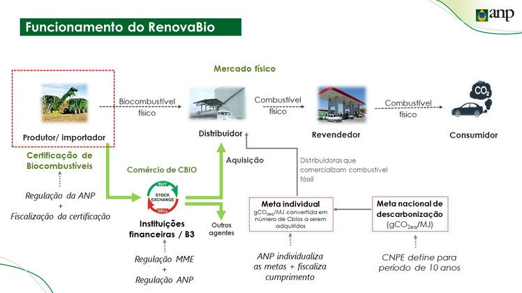
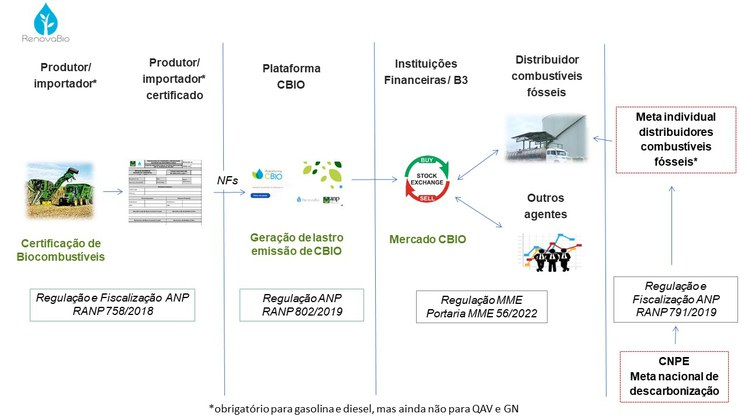
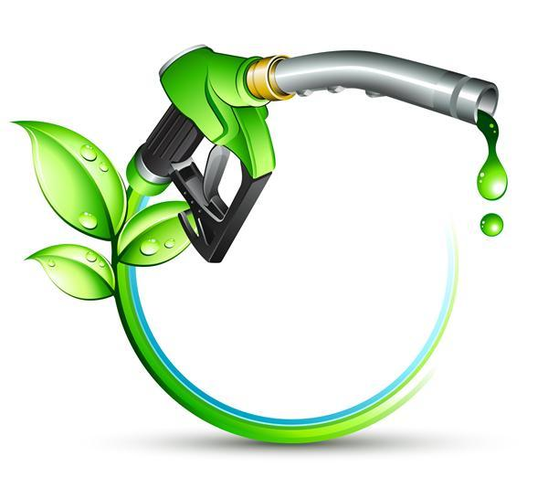
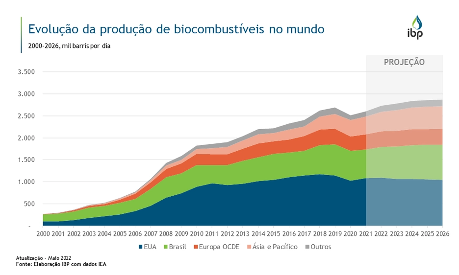
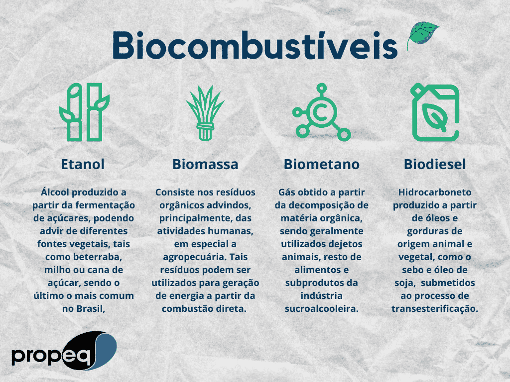

Energia renovável produzida a partir de recursos agrícolas, contribuindo para um futuro mais sustentável.
A agroenergia consiste na produção de energia a partir de materiais agrícolas, resíduos vegetais e matéria orgânica. Os biocombustíveis são fontes renováveis que ajudam a reduzir a dependência dos combustíveis fósseis.
Utiliza recursos que podem ser produzidos novamente pela natureza.
Ajuda na redução da poluição e das emissões de carbono.
Fortalece o setor agrícola e gera empregos.
Tipos principais de biocombustíveis
Áreas de aplicação
Benefícios sustentáveis
Produzido principalmente da cana-de-açúcar e do milho.
Produzido a partir de óleos vegetais e gorduras animais.
Obtido da decomposição de resíduos orgânicos.
Versão purificada do biogás usada como combustível.
Programa que incentivou o uso do etanol.
Expansão da produção nacional.
Política de incentivo aos biocombustíveis.
Contribui para reduzir os gases do efeito estufa.
Transforma resíduos agrícolas em energia.
Ajuda na construção de uma matriz energética sustentável.
Uso de sensores e tecnologia para reduzir desperdícios.
Produzido a partir de resíduos vegetais.
Plantas mais resistentes e produtivas.
Aumento da produção de biogás.




